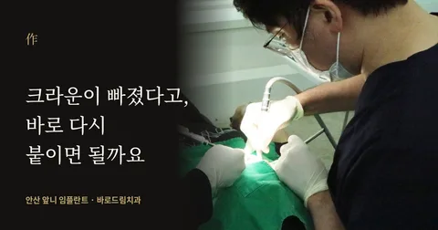
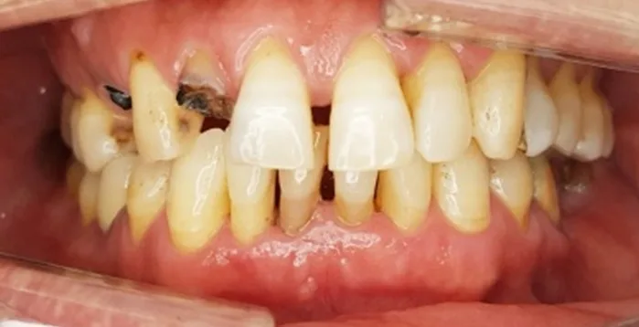
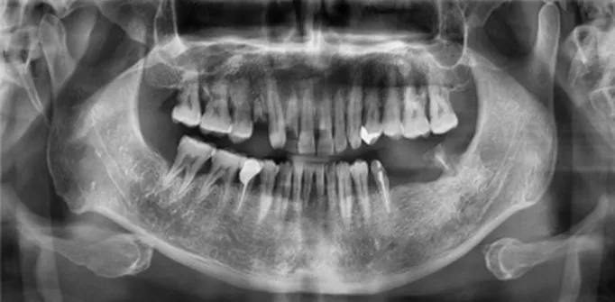
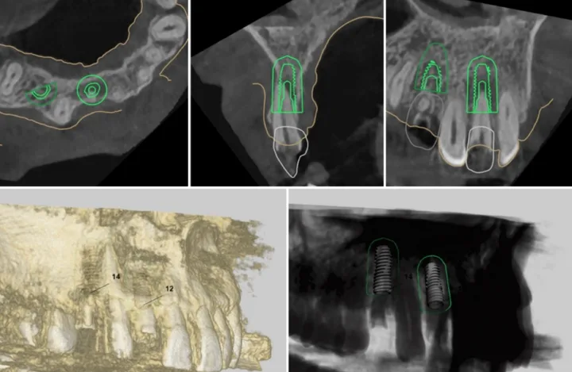
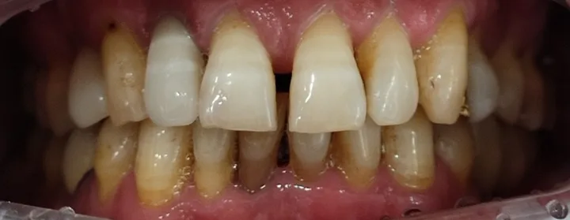

혹시, 이런 상황이신가요
"앞니 크라운이 빠졌는데, 이거 그냥 다시 붙이면 되는 거 아닌가요?"
이 질문을 안고 오시는 분이 생각보다 많습니다. 보철물을 씌운 치아는 충치가 다시 안 생긴다고 믿고 계셨던 분들입니다. 저도 환자로 30년을 살면서 같은 생각을 했습니다. 씌워놨으면 끝난 줄 알았습니다.
그런데 빠진 크라운을 손에 들고 오셨을 때, 저희가 먼저 보는 건 크라운이 아닙니다. 그 안에 남아 있던 치아입니다.
이 글을 읽고 나면
크라운이나 브리지가 흔들리거나 빠졌을 때 왜 "다시 붙이기"가 첫 번째 선택이 아닌지, 자연치아를 살릴 수 있는지 무엇으로 판단하는지, 그리고 살리기 어려울 때 앞니 임플란트가 어떤 과정으로 진행되는지를 알게 됩니다. 마지막에는 어떤 치과를 선택해야 하는지 판단 기준도 함께 드립니다.
목차
1. 보철물을 씌웠는데 왜 충치가 생기나
2. 빠진 보철물, 바로 붙이지 않는 이유
3. 자연치아를 살릴 수 있는지 판단하는 기준
4. 앞니 임플란트가 어금니와 다른 점
5. 네비게이션 임플란트와 즉시 식립, 뼈이식은 언제 필요한가
6. 이런 신호가 있다면 미루지 마세요
7. 치과를 고를 때 확인할 것
8. 자주 묻는 질문
1. 보철물을 씌웠는데 왜 충치가 생기나
크라운은 자연치아를 덮는 치료이고, 브리지는 옆 치아를 기둥 삼아 빠진 치아를 메우는 치료입니다. 둘 다 보철물 자체는 썩지 않습니다. 문제는 경계입니다.
보철물과 자연치아가 만나는 선에는 치태가 쌓입니다. 세월이 지나 보철물이 미세하게 들뜨거나 접착이 약해지면, 그 틈으로 세균이 들어가 안쪽 자연치아에 충치를 만듭니다. 겉으로는 멀쩡해 보여서 초기에는 알기 어렵고, 충치가 상당히 진행된 뒤 보철물이 흔들리거나 빠지면서 뒤늦게 발견되는 경우가 많습니다.
그래서 크라운이나 브리지를 하셨다면 정기 검진이 필요합니다. 씌운 치아라서 안심해도 되는 게 아니라, 씌운 치아라서 눈으로 확인이 안 되기 때문입니다.
2. 빠진 보철물, 바로 붙이지 않는 이유

최근 안산중앙역 바로드림치과에 앞니 크라운과 브리지가 빠져 내원하신 분이 계셨습니다. 보철물을 지탱하던 자연치아에 충치가 진행되면서 보철물이 떨어진 상황이었습니다.
이런 경우 "다시 붙일 수 있느냐"를 먼저 보지 않습니다. 순서가 반대입니다. 안에 남은 자연치아가 새 보철물을 다시 버틸 수 있는 상태인지를 먼저 확인합니다. 충치가 난 치아 위에 보철물을 다시 붙이면 당장은 붙어 있어도 안에서 손상이 계속 진행됩니다.
3. 자연치아를 살릴 수 있는지 판단하는 기준

보철물에 문제가 생겼다고 곧바로 발치하고 임플란트로 가는 것도 아닙니다. 보철물을 제거한 뒤 세 가지를 봅니다.
- 남아 있는 자연치아의 양과 충치가 퍼진 범위
- 치아 뿌리와 주변 잇몸뼈의 상태
- 새 보철물을 지지할 만큼 건강한 치질이 남았는지
보존이 가능하다면 자연치아를 유지하는 방법을 먼저 검토합니다. 반대로 충치가 잇몸 아래까지 넓게 내려갔거나 남은 치질이 부족해 어떤 보철물도 안정적으로 유지하기 어렵다면, 그때 발치 후 재건을 고려합니다.
이번 사례는 후자였습니다. 손상 범위가 커서 장기적인 보존이 어렵다고 판단했고, 현재 상태와 가능한 방법을 설명드린 뒤 발치와 임플란트로 회복하는 방향을 함께 정했습니다.
4. 앞니 임플란트가 어금니와 다른 점
앞니는 웃을 때, 말할 때 바로 드러납니다. 그래서 씹는 기능만 회복하면 되는 게 아니라 크라운의 모양과 색, 옆 치아와의 조화, 잇몸선의 높이까지 함께 봐야 합니다.
특히 위쪽 앞니는 바깥쪽 잇몸뼈가 얇은 경우가 많습니다. 발치 후 뼈의 형태가 변할 가능성을 미리 계산해야 합니다. 수술 전에 잇몸뼈의 폭과 높이, 옆 치아와의 거리를 세밀하게 확인하는 이유입니다.
임플란트 위치도 중요합니다. 뼈가 있는 곳에 심는 게 아니라, 최종적으로 만들어질 앞니의 위치에서 역산해 방향과 깊이를 정합니다. 너무 바깥이나 안쪽으로 들어가면 나중에 크라운을 자연스럽게 만들기도, 관리하기도 어려워집니다. 수술 단계부터 최종 보철의 형태를 같이 설계해야 하는 이유입니다.
5. 네비게이션 임플란트와 즉시 식립, 뼈이식은 언제 필요한가

이번 사례에서는 검사 자료를 바탕으로 디지털 방식으로 임플란트 위치를 계획하고 수술용 가이드를 활용했습니다. 흔히 네비게이션 임플란트라고 부르는 방식입니다. 3D 영상과 구강 스캔 정보로 임플란트의 위치·각도·깊이를 사전에 정하고, 그 계획을 가이드로 실제 수술에 옮깁니다.
다만 정직하게 말씀드리면, 디지털 장비를 쓴다고 오차가 완전히 사라지지는 않습니다. 환자분의 뼈와 잇몸 상태, 가이드의 적합도, 수술 당일 상황을 의료진이 함께 판단해야 합니다.
발치한 날 바로 임플란트를 심는 즉시 식립도 가능한 경우가 있습니다. 하지만 모든 앞니에 해당하지는 않습니다. 발치 후 남는 잇몸뼈의 양과 형태, 염증 여부, 임플란트를 안정적으로 고정할 수 있는지에 따라 달라집니다. 조건이 맞지 않으면 발치 부위를 먼저 회복시키거나 뼈이식 후 치유 기간을 거치는 편이 더 적절할 수 있습니다.
뼈이식도 마찬가지입니다. 앞니 임플란트라고 반드시 뼈이식을 하는 건 아닙니다. 식립할 자리에 충분한 뼈가 있으면 필요 없고, 뼈의 폭이 부족하거나 결손이 크면 필요한 범위에서 시행합니다. 치료 전 영상 검사와 구강 검사로 필요성을 판단하는 과정이 앞니에서는 더 중요합니다.
임플란트가 뼈와 결합한 뒤에는 크라운을 올립니다. 앞니 크라운은 옆 치아의 색과 밝기, 크기와 길이, 배열을 함께 보고 재료와 형태를 정합니다. 한 가지 재료가 모든 분께 맞는 건 아닙니다.
6. 이런 신호가 있다면 미루지 마세요
- 크라운이나 브리지가 흔들리거나 씹을 때 움직이는 느낌이 든다
- 보철물 경계 부위가 검게 변했거나 음식물이 자꾸 낀다
- 씌운 치아인데 시리거나 욱신거린다
- 보철물이 빠진 채 며칠 이상 지났다
- 브리지를 한 지 오래됐는데 검진을 받은 적이 없다
보철물 안쪽 충치는 겉으로 보이지 않습니다. 이런 신호가 있을 때 빨리 확인할수록 자연치아를 살릴 가능성이 높아집니다.
7. 치과를 고를 때 확인할 것
첫째, 빠진 보철물을 바로 다시 붙이자고 하는지, 안쪽 치아 상태부터 확인하자고 하는지 보세요. 순서가 판단의 질을 말해줍니다.
둘째, 발치와 임플란트를 권할 때 왜 보존이 어려운지 근거를 설명하는지 보세요. 남은 치질, 충치 범위, 뼈 상태를 영상으로 보여주며 설명하는 곳이 좋습니다.
셋째, 브리지였다면 문제가 생긴 치아 하나만 보는지, 브리지를 받치고 있던 다른 기둥 치아까지 함께 검사하는지 확인하세요. 임플란트로 재건하면 기둥으로 묶여 있던 옆 치아를 각각 독립적으로 치료할 수 있는 길이 열리기도 합니다.
넷째, 앞니라면 잇몸 모양까지 이야기하는지 보세요. 크라운만 예쁘게 만든다고 앞니가 자연스러워지지 않습니다.
바로드림치과 안산점은 이렇게 봅니다

크라운이나 브리지가 빠졌다고 반드시 임플란트가 필요한 건 아닙니다. 안산중앙역 바로드림치과는 먼저 안쪽 자연치아를 다시 쓸 수 있는지를 확인하고, 보존이 어렵다고 판단될 때 발치 후 임플란트를 포함한 재건 방법을 검토합니다.
앞니 임플란트를 계획할 때는 남은 자연치아와 잇몸뼈, 옆 치아와의 거리, 임플란트의 위치와 방향, 최종 크라운과 잇몸의 형태까지 하나의 설계로 봅니다. 네비게이션 임플란트나 뼈이식도 모든 분께 똑같이 적용하지 않고, 정밀 검사 결과에 따라 필요한 방법만 선택합니다.
크라운 제작은 원내 디지털 기공소에서 이루어집니다. 옆 치아의 색과 잇몸선을 직접 보고 조정할 수 있어 앞니처럼 조화가 중요한 부위에서 의미가 있습니다.
치과 치료가 두려워 미뤄오셨다면 의식하진정 상태에서 진행하는 방법도 있습니다. 저도 그 두려움을 알기에, 편하게 물어보셔도 됩니다.
전화 031-402-2282 · 카카오톡 상담 · 네이버 예약
경기 안산시 단원구 고잔로 108 대동조이월드 4층 (안산중앙역 도보 5분)
자주 묻는 질문
빠진 크라운을 다시 붙이면 안 되나요?
안쪽 치아에 충치가 없고 치질이 충분히 남아 있다면 재접착이 가능한 경우도 있습니다. 다만 빠진 원인이 충치인 경우가 많아, 붙이기 전에 안쪽 상태를 확인해야 합니다.
앞니 임플란트는 꼭 뼈이식을 해야 하나요?
아닙니다. 남은 잇몸뼈의 양과 형태로 판단합니다. 뼈가 충분하면 하지 않고, 부족하면 필요한 범위에서 시행합니다.
발치하고 그날 바로 임플란트를 심을 수 있나요?
조건이 맞으면 가능합니다. 발치 후 뼈의 양과 염증 여부, 초기 고정이 되는지에 따라 달라지며, 맞지 않으면 치유 기간을 두는 편이 낫습니다.
네비게이션 임플란트면 실패 확률이 없나요?
사전 계획의 정확도를 높이는 방법이지, 오차를 없애는 방법은 아닙니다. 뼈와 잇몸 상태, 가이드 적합도, 수술 당일 판단이 함께 작용합니다.
임플란트를 하면 충치 걱정은 끝인가요?
임플란트 자체에는 충치가 생기지 않지만 주변 잇몸에 염증이 생길 수 있고, 시간이 지나면 나사 풀림이나 교합 변화가 나타날 수 있습니다. 정기 검진은 계속 필요합니다.
브리지를 다시 하는 것과 임플란트 중 뭐가 나은가요?
남은 기둥 치아의 상태에 따라 다릅니다. 기둥 치아가 건강하면 브리지 재제작을, 기둥 치아까지 손상됐거나 옆 치아를 더 깎고 싶지 않다면 임플란트를 검토합니다.
글쓴이
한지상 대표원장 — 30년을 환자로 살았던 치과의사. 수면 임플란트·All-on-X 담당.
"저도 환자였기에, 그 마음을 압니다."
검수: [교체] 원장 검수 후 이름·일자 입력
함께 읽으면 좋은 페이지
- 네비게이션 임플란트 — 크라운을 먼저 설계한 뒤 임플란트 위치를 정하는 방식
- 수면 임플란트 — 수술이 무서워 미뤄오셨다면
- 크라운 — 크라운 안쪽에 충치가 생기는 이유
- 보철치료 — 브리지와 임플란트, 무엇이 다른가
- 의료진 소개
알려드립니다
이 글은 실제 내원 사례를 바탕으로 한 정보 제공 목적의 글입니다. 치료 방법과 결과는 개인의 구강 상태에 따라 다르며, 정확한 판단은 검사 후 의료진과의 상담을 통해 이루어집니다.
※ 이 글은 실제 내원 사례를 바탕으로 한 정보 제공 목적의 글입니다. 치료 방법과 결과는 개인의 구강 상태에 따라 다르며, 정확한 판단은 검사 후 의료진과의 상담을 통해 이루어집니다.